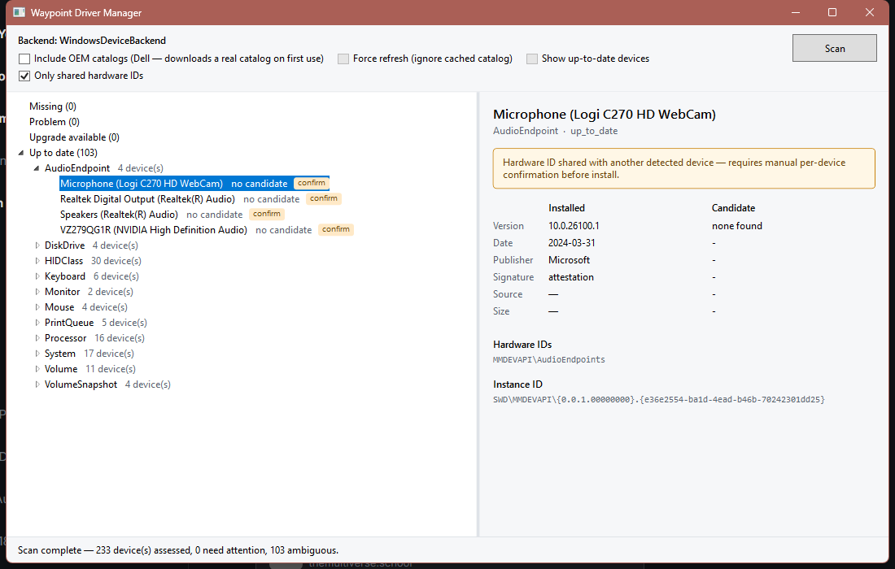
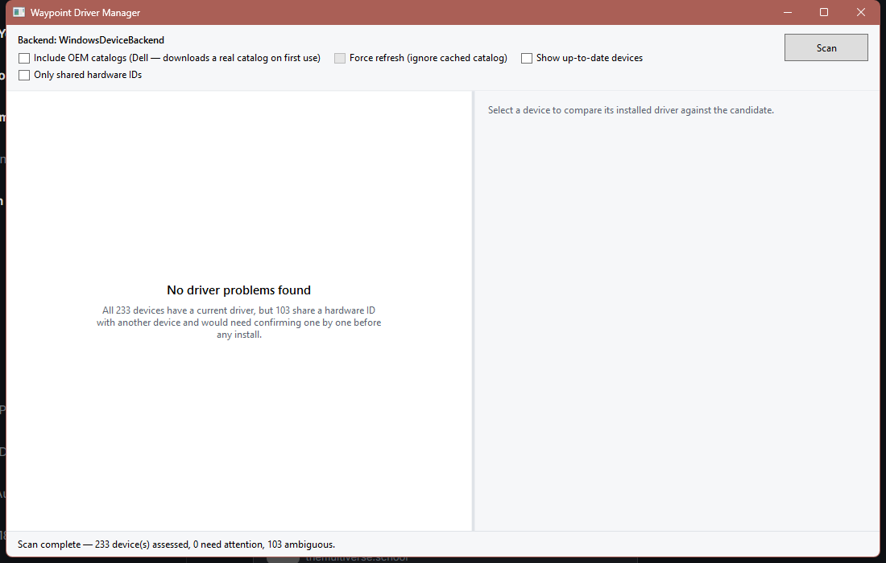
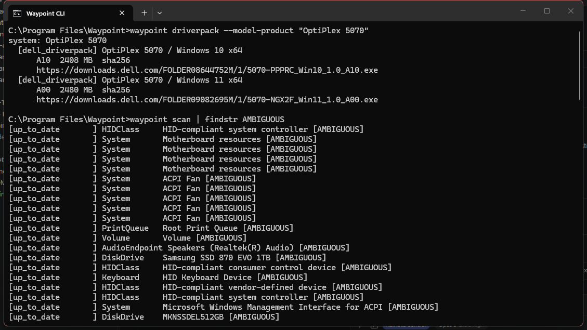

Make and Do sprint · day 7
A driver detection, sourcing and install manager for Windows, built to fix the structural problems in Snappy Driver Installer rather than reskin them. This page is the sprint record: what got proven on real hardware, what is still a promise, and what it cost.
Hours are derived from commit timestamps across both repositories: commits are clustered into sessions wherever the gap is under 90 minutes, and each session is credited 30 minutes for the work before its first commit. That makes 16 hours a floor, not a total - it cannot see work after a session's last commit, and it cannot see thinking. Aug 30 to Sep 10.
The walking skeleton written on day 3 named the whole path in its ugliest honest form and marked which parts were real. Steps 1 and 2 were gaps then, running on a mock backend because nothing had touched Windows. They are proven now. Steps 5 and 6 were gaps then and are gaps now.
waypoint scan.
Way in.
waypoint plan prints each candidate as a diff card: installed against
candidate, plus the source and its hash.
waypoint apply prints the exact commands and the diffs, and applies nothing.
Dry run is the default. Installing takes an explicit flag.
waypoint apply --apply takes a verified restore point, exports the current
driver, and installs one driver.
Written in full. Has never run against a live driver.
Enumeration reads the device tree through CfgMgr32 directly rather than WMI, which is neither trim- nor AOT-safe and costs 2.4 seconds where this takes about 400 milliseconds. Every number below came off a live Windows 11 desktop, checked against Windows' own tools.
Get-PnpDevice - zero missing, zero extraIsSigned, reached without using WMI at all


Day 2 circled one bet: that a reversible, verified install and rollback chain is a real thing and not just a promise. The whole margin over “an SDI reskin” rests on it. Four sessions later it has exactly as much real-hardware evidence behind it as it had then, which is none.
The restore point has never been created. pnputil has never installed anything.
The rollback has never been fired. Every part of that chain is written and tested against
a mock; none of it has run on a machine that could break.
C# on .NET 8, compiled ahead of time with Native AOT so the command line is a single signed
executable with no runtime to install. Device access is CfgMgr32 and SMBIOS through direct
P/Invoke; installs go through pnputil and nothing else. The window is WPF on
the same engine the CLI uses, built from one factory so the two cannot drift. Vendor
catalogs are parsed with the standard library only. Packaging is WiX 5, deliberately not 6,
which would mean accepting a maintenance-fee licence. Tests are xUnit against fixtures
trimmed from real vendor catalogs, so continuous integration never depends on Dell's
servers being up.
It began as Python with a Qt front end. That version is preserved on a reference branch and is not maintained. The reason for leaving is in ADR-0001, along with the places where the rewrite deliberately behaves differently from the original.